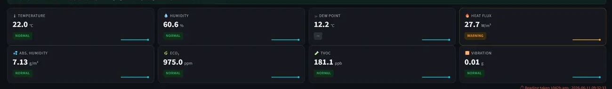
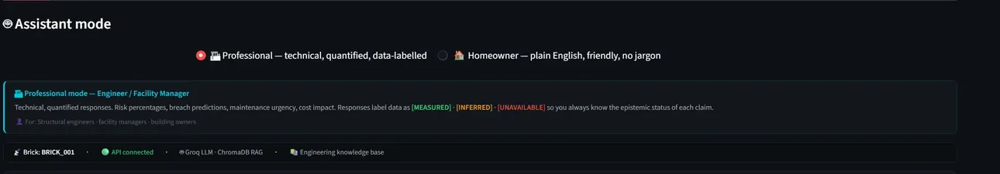
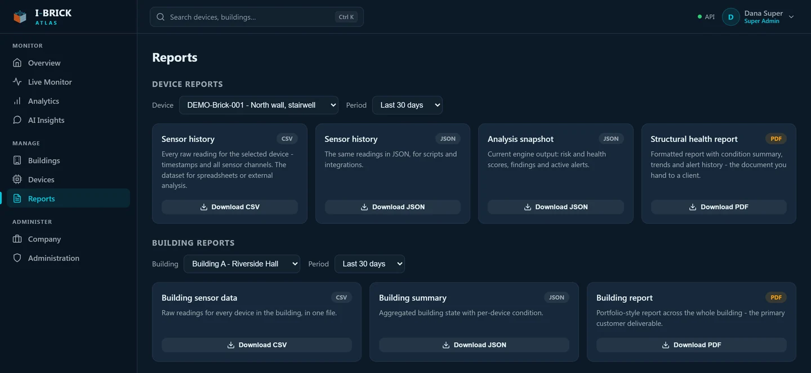

I-Brick is a sensor node that sits inside the wall and reports the moisture, thermal and air-quality conditions that drive envelope failure, as an explainable 0–100 risk score with the reasoning attached, not a raw data dump.
Envelope moisture gets diagnosed visually, after the fact, by whoever happens to be standing in the room. The conditions that caused it were present for months inside the wall, where nobody was looking.
of the EU population lives in a dwelling with a leaking roof, damp walls or floors, or rot in the window frames.
Eurostat, EU-SILC housing quality, 2024 · sourcehigher risk of respiratory symptoms and asthma for occupants of damp or mouldy buildings, against comparable dry ones.
WHO Guidelines for Indoor Air Quality: Dampness and Mould · sourceof home insurance claims are water damage and freezing, the second most common cause of loss. The average claim is $15,400.
Insurance Information Institute, 2023 claim year · sourceA node sized to sit within the wall build-up, sampling conditions inside the structure rather than room air two metres away.
The board holds its own thresholds and rolling baselines, keeps working when the network drops, and pushes over Wi-Fi, or LoRa on sites without coverage.
Physics first: dew point, absolute humidity, surface RH, heat flux. Then trend, anomaly and forecast layers on top, fused into one score.
A live portfolio view, threshold and predicted alerts, and a PDF inspection report per node or per building for hand-off to an engineer or insurer.
Most monitoring products blur the line between what the hardware measured, what software inferred, and what nobody checked at all. This is the full breakdown for the current node.
| Channel | Status | How |
|---|---|---|
| Temperature | Measured | BME680, on the node inside the wall build-up |
| Relative humidity | Measured | BME680 |
| Barometric pressure | Measured | BME680 |
| Gas resistance (MOX) | Measured | BME680 metal-oxide element, in kΩ |
| Vibration RMS | Measured | LSM6DS3 IMU, RMS over the sampling window |
| Dew point & dew-point margin | Derived | Magnus formula, from temperature and RH |
| Absolute humidity | Derived | Thermodynamic, from temperature and RH |
| Surface RH | Derived | Modelled at the wall surface, where mould actually grows |
| Heat flux | Derived | Deviation from the wall's own learned thermal baseline |
| VOC / air-quality signal | Derived | Gas resistance compensated for humidity and temperature, then scored against this device's own baseline in robust sigma |
| Vibration frequency | Not measured | Needs burst sampling the node does not do. Stored as null, never estimated |
| Air infiltration / pressure Δ | Not measured | No differential pressure sensor fitted. Reported as unassessed, not as zero |
| Crack width & strain | Roadmap | Needs a strain-gauge variant of the node. Not claimed today |
The rule the product enforces: when a channel has no sensor behind it, the system reports it as unassessed instead of printing a number. A risk score that quietly treats “not measured” as “measured zero” is worse than no score at all, so ours refuses to.
Eleven layers run over every reading: rule-first, physics wherever physics exists, machine learning only where it earns its place. Each layer contributes a weighted component, and every score arrives with its contributing causes attached.
Not renders. Screens from the current build: per-node channel tiles, an assistant that labels its own epistemic status, and exports an engineer can file.



Instrument a wall during construction and carry the evidence through the defects liability period. When a damp claim arrives eighteen months after handover, you have a record of what the wall was actually doing.
Damp and mould complaints are becoming a legal exposure, not a maintenance ticket. Continuous evidence lets you triage which reports are urgent, and show when a case was acted on.
A programmable node, an open channel registry and a documented risk engine, for building-physics studies, retrofit verification, or comparing wall build-ups under the same weather.
We are taking four sites this quarter. We would rather instrument a wall with a known problem than a perfect one: the corner that keeps coming back, the flat with repeat complaints, the retrofit you want verified.
One paragraph is enough: the building, the problem, and roughly when you would want to start. We reply to every enquiry, including the ones we cannot take on.
Or write directly to contactibricklabs@gmail.com